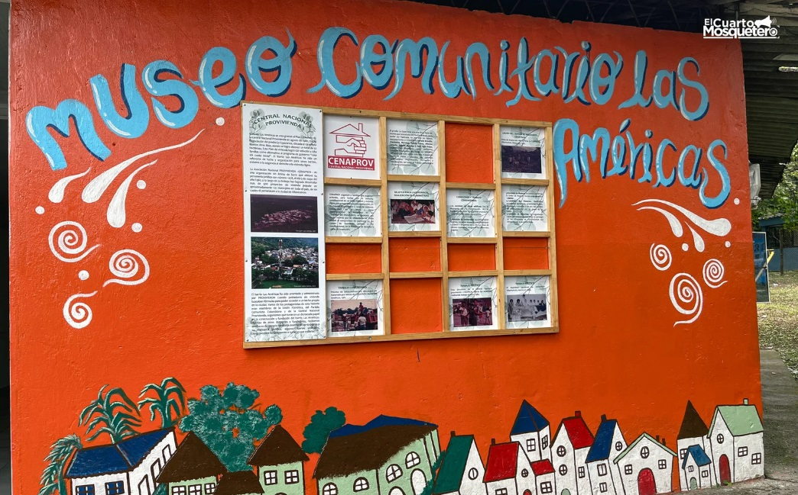
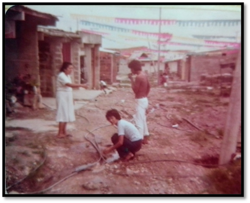
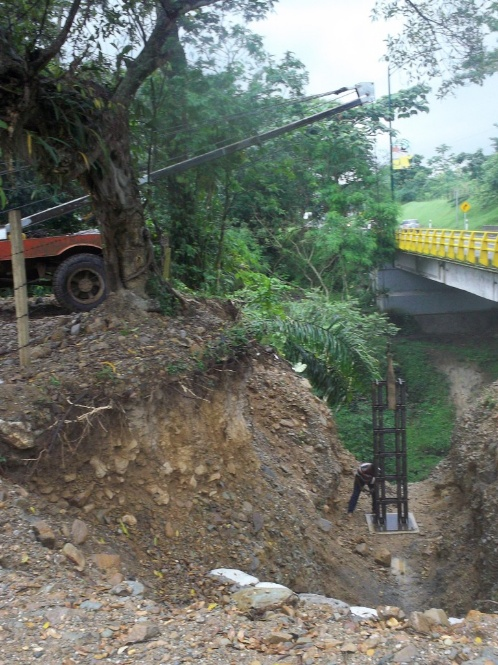
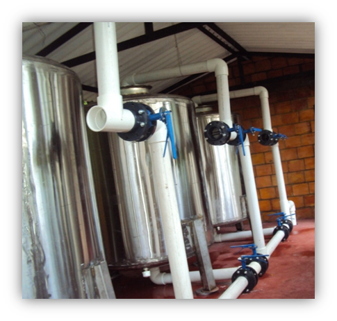
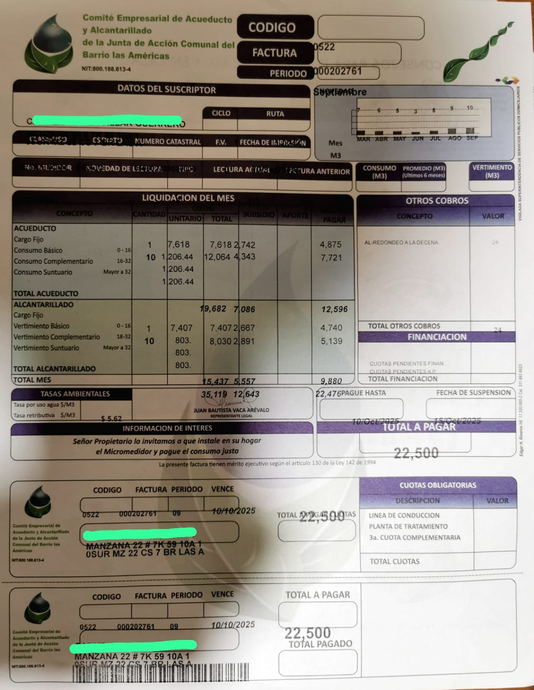
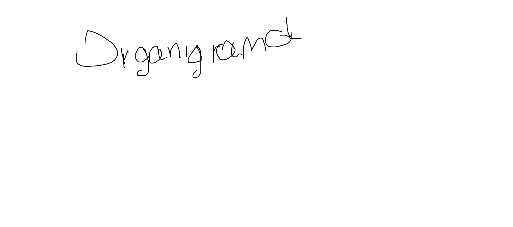

El Museo Un espacio comunitario para preservar y compartir la memoria histórica del barrio Las Américas.
Misión y Visión
Un lugar donde la memoria del barrio se convierte en historia viva.MISION
El Museo Las Américas de Villavicencio tiene como misión preservar, investigar y difundir la memoria histórica del barrio Las Américas, fundado en 1980, reconociendo las voces, experiencias y saberes de su comunidad. A través de procesos participativos, educativos y culturales, el museo promueve la identidad barrial, el sentido de pertenencia y la valoración del patrimonio social como parte fundamental de la historia de la ciudad.VISION
Para el año 2035, el Museo Las Américas de Villavicencio será un referente local y regional de museología comunitaria, reconocido por su contribución a la construcción de memoria histórica barrial, la participación ciudadana y la educación comunitaria. El museo se consolidará como un espacio vivo de encuentro, diálogo intergeneracional y aprendizaje, articulado con instituciones educativas, organizaciones sociales y procesos culturales del territorio.Historia
DE BARRIO MANGUERAS AL CEAA
El desarrollo del sistema de servicio de agua del barrio Las Américas es resultado de años de perseverancia, sentido de pertenencia y gestión comunitaria en medio de fuertes tensiones sociopolíticas y limitantes económicas. Este acueducto comunitario, similar a los múltiples acueductos creados a lo largo de la historia, obedece a la gestión de un grupo de personas alrededor la solución de una necesidad inmediata y urgente. Sin embargo, a diferencia de otros acueductos, el de Las Américas sigue vigente y brindando servicio de agua potable. No obstante, lejos de haber conseguido un pedestal de seguridad, la comunidad de las Américas se enfrenta a las tensiones internas y externas que implica mantener el control del recurso hídrico. Para exponer lo anterior, en este artículo se describirán brevemente los sucesos más importantes en el proceso de desarrollo del sistema de acueducto. Posteriormente, se plantearán las tensiones existentes alrededor del mismo, y finalmente, se presentarán las conclusiones.
RESEÑA HISTORICA
Esta reseña es tomada de la información expuesta en el libro Tejiendo Historias, Forjando Comunidad (Elibeth, 2025) y los relatos de entrevistas realizadas para su elaboración.
El barrio Las Américas fue fundado en 1980 tras la compra de la finca La Esperanza y construyó su primer acueducto comunitario a inicios de 1983. Acueducto que inició bajo el liderazgo de la Central Nacional Provivienda CENAPROV y tras algunas capacitaciones recibidas por parte de ONG. Esto quiere decir que desde inicios de 1981 hasta 1983 cada fundador debió solventar la necesidad de agua desde su propia iniciativa, valiéndose de las pautas dictadas por CENAPROV. En la práctica, esto significó una serie de "ranchas" -pequeñas casas a base de tejas de lata, tablitas y paroí- abastecidas a través de mangueras por el agua de los caños Tigre y Parrado.

Fuente: Foto tomada del archivo del barrio Las Américas. Descripción: Se observan casas de mediados de 1985 y las mangueras de agua tiradas por las calles.Inicialmente, algunos vecinos compartían mangueras para trasladar agua desde los caudales hasta sus casas y procuraban lavar la ropa en los caños. Esta dinámica creó una inevitable participación y socialización entre vecinos. No obstante, también motivó discordias y desórdenes. Entre los desórdenes destacan las múltiples mangueras esparcidas por el barrio entre los años 1981 a 1986 y que le llevaron al sobre nombre de Barrio Mangueras.
En 1983 se creó la Asociación de Usuarios del Acueducto Barrio las Américas. A través de esta, Las Américas construyó 5 tanques recolectores en distintos puntos del barrio. Cada tanque tenía múltiples tomas en su parte inferior para desde ahí, distribuir el agua a cada una de las casas. Este método, si bien subsano un poco la necesidad de un servicio constante y estable, resultó ineficaz debido a que el agua no contaba con ningún tipo de tratamiento, presentaba constantes fallas (taponamiento de tubería a causa de las lluvias) y no era suficiente para abastecer la demanda.
En 1984 fueron construidos sin ningún éxito los primeros tanques desarenadores dentro del mismo caudal. Tres veces se construyeron y tres veces fueron arrasados por las tormentas.
En 1985 se construyeron nuevos sistemas para desarenar el agua logrando con ello reducir el taponamiento de las tuberías. Sin embargo, el sistema en sí se taponaba rápidamente. En 1986, se logró la creación de un tanque desarenador y a finales del mismo año se eliminaron los tanques recolectores a través de la instalación y uso de tuberías enterradas. Con este cambio se dio fin al periodo de Barrio Mangueras.

Fuente: Foto tomada del archivo del barrio Las Américas. Descripción: Foto del 2011, construcción de vuelo sobre el caño Maizaro para transporte de agua.En 1991 se conformó el actual Comité Empresarial de Acueducto y Alcantarillado CEAA. Con ello, se iniciaron una serie de cambios en procura de mejorar el servicio y cumplir con los requerimientos legales. Este comité funciona bajo la Junta de Acción Comunal JAC, usando la misma personería jurídica y con algunas independencias de tipo administrativo.
En el año 2004 y bajo la latente amenaza de pérdida de potestad en el manejo del acueducto debido a problemas administrativos, un grupo de lideres comunitarios encabezados por el entonces presidente de JAC Arbey Valencia, gestionó procesos de concientización en procura de la mejora en la calidad del agua. Esta gestión fue acogida por la mayoría de los miembros de la comunidad que ya estaban preocupados porque el agua de los caudales en uso resultaba escasa y presentaba contaminación visible -aguas amarillas-.
Luego de un par de años en proceso de concientización comunitaria, en febrero del 2006, la comunidad aprobó en asamblea general de JAC un aporte voluntario de $5.000 pesos por persona (aprox. 13.000 hoy día). Con dichos fondos se inició proceso de búsqueda de nuevas aguas y mejora en el servicio. Ese mismo año el barrio consiguió las aguas del caño Maizaro y gestionó recursos para poder transportar el agua desde dicho caudal hasta el barrio. Aunque algo de la tubería fue adquirido por medio de la figura legal de acción popular, la mayoría de los recursos fueron resultado de un proceso de autogestión dado en 3 fases.
Fase I, se recaudaron $230.000 por vivienda en el año 2006 (aprox. $614.000 hoy), con la finalidad de lograr la recolección y trasporte del agua del caño Maizaro. Sin embargo, los recursos y permisos no fueron conseguidos en los tiempos estipulados y por consiguiente las obras se vieron retardadas e interrumpidas.

Fuente: Foto tomada del archivo del barrio Las Américas. Descripción: Planta de tratamiento de agua.Para el año 2011 la comunidad no había logrado transportar el agua del caño Maizaro y había perdido la concesión de esta. Los líderes del CEAA se vieron en la inminente presión tanto comunitaria como legal, de retomar la concesión y debido a cambios legales, potabilizar el agua. Para dar respuesta a este nuevo requerimiento, la comunidad en asamblea general aprobó un segundo aporte de $300.000 por casa (aprox. $594.000 hoy), algo que el libro describe como Fase II.
El proceso de ejecución de la planta de tratamiento se puso en marcha con la empresa PACAR, pero debido a las dificultades financieras del barrio, la obra fue suspendida. Es importante tener presente que la comunidad de las Américas fue fundada por personas de bajos recursos y aunque las familias progresaron económicamente, para varias de ellas fue difícil realizar los pagos propuestos y aprobados por la asamblea.
Ante el reto financiero que implicaron los costos de la planta de tratamiento de agua, la JAC en asamblea general aprobó la venta de la casa de la JAC. Así, se solventó la ejecución de la planta de tratamiento. El 25 de febrero del 2014, el CEAA canjeó dicha casa como parte de pago para la empresa Tecni Aguas de Oriente, siendo esta la Fase III de consecución de recursos.
El 14 de agosto del 2014, el barrio recibió por primera vez agua potable y desde dicho momento se convirtió en un barrio líder para el municipio y el país.
En el 2015 el CEAA implementó un sistema tarifario de acuerdo con las exigencias legales y se inscribió a la Superintendencia de Servicios Públicos con la promesa de que este proceso le brindaría acceso a subsidios para los estratos 1 y 2. Adicionalmente, inició la promoción del uso de medidores de agua.
Del 2015 al 2025 se han logrado otros cambios importantes como la construcción y encerramiento de tanques de almacenamiento de agua, así como el encerramiento de la planta de tratamiento de agua.
Los Retos
No obstante los logros obtenidos, el barrio presenta tensiones internas y externas. Las tensiones internas giran mayormente respecto a la forma en que se administra el CEAA y se hicieron notorias a partir del año 2015. Existe un grupo de vecinos haciendo oposición a los actuales directivos del CEAA al argumentar que los recursos son mal administrados y por ende ellos deben tomar el control. Entre los errores que enlistan indican que, los directivos actuales tergiversan recursos y que, debido al ajuste tarifario, incrementan el costo de las facturas arbitrariamente. Estas discordias se alimentan de otros temores infundados y de los vecinos que aún no han pagado o completado los pagos de las fases mencionadas, así como de los oponentes a la instalación de medidores.

Fuente: Factura de agua aportada por un usuario. Descripción: En la factura se evidencia un usuario con beneficio de subsidio y cobro a partir de contador de agua.De dicha oposición, destaca el periodo de diciembre del 2022 a marzo del 2023, tiempo en el cual la parte opositora arbitrariamente tomó la oficina del CEAA. La toma ocurrió el 6 de diciembre del 2022, luego de una asamblea por ellos convocada y que incumplió con los estatutos de la JAC. El mismo día de la toma cambiaron las guardas de las puertas y el acceso a las cámaras de seguridad. Durante dicho periodo recibieron pagos que no depositaron en las cuentas del CEAA por lo que hoy día enfrentan un proceso legal, no solo por los dineros recaudados sino por la compra arbitraria de un teléfono celular para el líder de la parte opositora, Fernando Barbosa. Además de haber entregado notas en hojas cuaderno como sustento de algunos pagos. Este corto periodo finalizó abruptamente el 20 de marzo del 2023, a través de la gestión de los actuales lideres, quienes se valieron de la figura jurídica de amparo policivo para retomar la administración del CEAA.
Las tensiones externas ocurren por la sobrecarga laboral y la falta de incentivos por parte de las entidades que rigen los acueductos. En el año 2015, luego de haber ajustado los valores de las facturas y creyendo que la legalización del barrio garantizaría la recepción de subsidios, el CEAA aplicó dichos beneficios a todos los usuarios de estratos 1 y 2. De los subsidios prometidos, el CEAA no ha recibido ningún rubro para los años 2015-2020. Durante el 2022 recibió un pago de subsidios para el año 2021 y de ahí en adelante se han recibido pagos escasos, parciales e incompletos. A la fecha del 2022 el estimado de la deuda de subsidios a favor del CEAA superaba los 200 millones pero, solo recibió un aproximado de $47 millones. Para el 2023 recibió un pago de $3,7 Millones, correspondientes a un mes. Para el 2024, recibió aprox. $27 millones y para el año vigente, 2025, no ha recibido pagos. Con frustración la administradora del acueducto Martha López indica que, hasta la fecha, el proceso de legalización solo ha significado sobrecarga de trabajo administrativo. La inscripción en la Super implica generar reportes mensuales, semestrales y anuales en más de 25 formularios diferentes. Además, es necesario pagar $800.000 mensuales para mantener el acceso a la misma. A esto se suma la frustración de haber invertido en el pago de abogados que no lograron ningún tipo de resultado y las múltiples fallas que la mencionada plataforma presenta.
Conclusiones
El barrio Las Américas inició en 1980 y creó su primer acueducto en 1983. Desde entonces ha desarrollado múltiples obras de mejora del sistema de acueducto que se reflejan en el actual CEAA. No obstante, el acueducto presenta tensiones internas con un grupo minúsculo de la comunidad que quiere tomar el control de este valiéndose de artimañas administrativas. Y presenta tensión externa con respecto a los entes reguladores y sus administradores debido a: los costos que la legalización del acueducto implica, las pérdidas económicas derivadas de entregar subsidios que no son compensados por el Estado, la sobrecarga laboral. Es importante resaltar que, el acueducto comunitario y sus lideres, lejos del desánimo, están presentes en diversos escenarios locales y nacionales para continuar luchando por el desarrollo de lo comunal y en este caso, un cambio en la normativa que favorezca los pequeños acueductos y les brinde garantías de permanencia.
Organigrama

🙏 Gracias por creer en nuestra comunidad y en la importancia de preservar nuestra historia. Tu apoyo hace posible que el Museo Las Américas siga siendo un espacio vivo para todos.